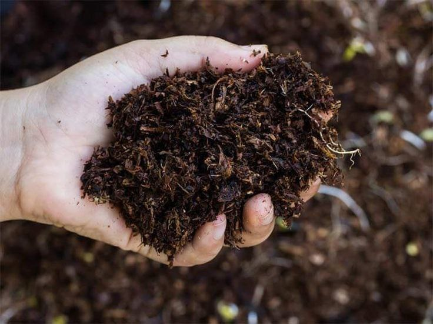
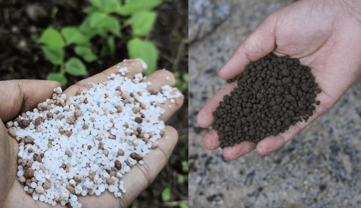
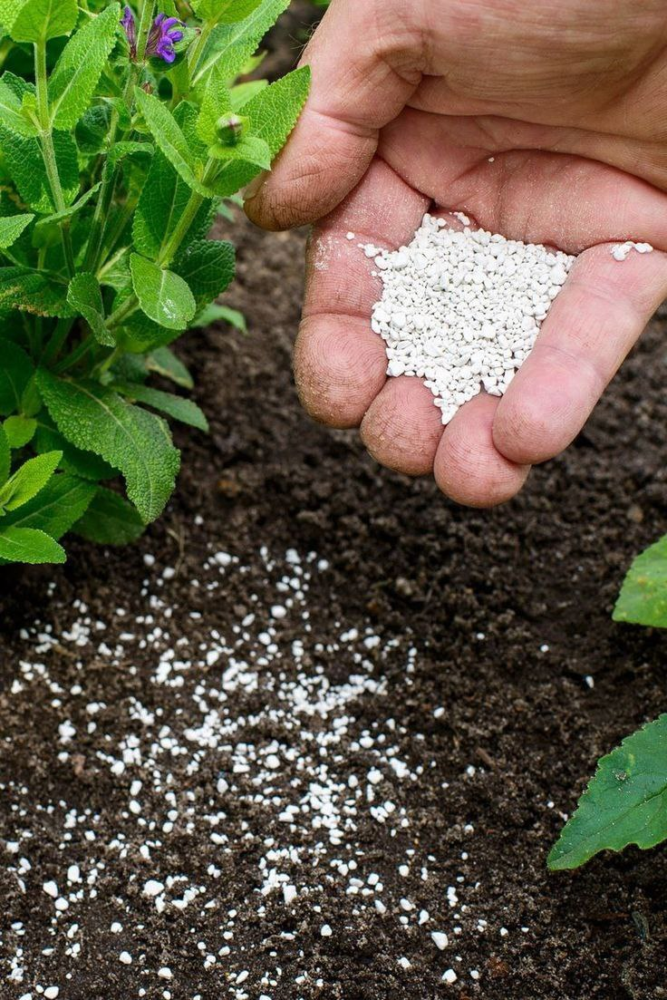

How to get started:
- Test soil to determine whether there really is a nutrient deficiency.
- If supplemental nutrients are necessary, choose a renewable natural fertilizer — preferably produced locally — over synthetic, petrochemical-based fertilizers or mined products like rock phosphate. Synthetic fertilizers require much more energy to produce than natural options such as blood meal, bone meal, fish meal or emulsion, and kelp meal.
- Whenever appropriate, use single-nutrient fertilizers instead of so-called complete fertilizers that contain nitrogen, phosphorus and potassium. For example, if soil is low in nitrogen but not in phosphorus and potassium, use blood meal, fish emulsion or another high-nitrogen natural fertilizer. Better yet, grow green manure.
- Add only the amount of fertilizer recommended in the soil test, no more. Follow the guidelines on the fertilizer label.
- Avoid contributing to water pollution by applying fertilizer only to the soil, not paved areas, and sweep stray particles into the planting bed. Do not use fertilizer near streams or drainage ways.
The Different Types of Fertilizers
- Organic and Inorganic Fertilizers
- Organic fertilizers are made from natural and organic materials—mainly manure, compost, or other animal and plant products. These fertilizers are a great source of nutrients, though there isn’t a measurable amount of any specific nutrients—some bags will print estimates. Organic fertilizers tend to work slowly and over the long-term. It can help to build up your soil over time. One of the best benefits of organic fertilizers is that is can be made at home. Using your own compost can help grow your garden! Inorganic fertilizers are made of up chemical components that contain necessary nutrients. If you’re looking to give your garden a quick boost, this is likely the best option for you. For successful short-term growth, determine what nutrient your plant needs and use an inorganic fertilizer with nutrient.
- Nitrogen Fertilizers
- Nitrogen is a plan nutrient responsible for growth. This ingredient is useful in fertilizers, particularly during the middle stages of a plant’s lifespan, when it needs encouragement to continue to grow large and stem new leaves. Both organic and inorganic fertilizers have sources of nitrogen in them
- Phosphate Fertilizers
- Phosphorous is a nutrient that plants need continuously. Throughout their lifecycle, phosphorous help to strengthen the root system and stems of a plant. Flowering, seeding, and fruiting can all be improved with phosphorous. Plants with a phosphorous deficiency will experience stunted growth. Phosphorous is long-lasting and slow acting. Using fertilizer in your soil before planting is generally a good idea.
- Potassium Fertilizers
- Potassium will help your plants to grow deeper and stronger roots. It can also help protect your plants from harm when they are deprived of other nutrients. This nutrient is vital for photosynthesis and has the ability to slow down any diseases that may infect your garden. Potassium fertilizer has a lot of benefits. The when and how of planting this fertilizer will depend on what you’re are planting. When you are using this fertilizer, place it as close to the roots as possible. If there is a potassium deficiency in your plant, you may see yellowing or browning on the edges of leaves. Leaves will eventually die off if the deficiency continues.
Fertilizer Forms
Fertilizer comes in a few different forms. There is liquid, powder, and granular. Liquid fertilizers are often diluted with water. Spreading them is similar to watering your garden, usually done with a hose attachment. Powdered fertilizers also need water to be productive. Usually they are spread by hand and watered to complete absorption. Granular lawn fertilizers can easily be spread on top of soil. These nutrient pack granules will be soaked into your garden over time as you water it.


